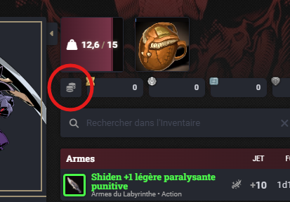
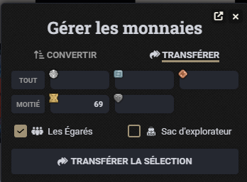
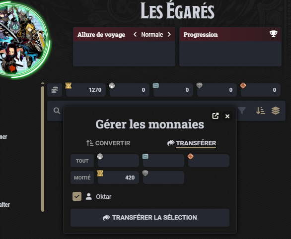
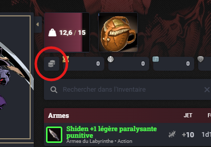
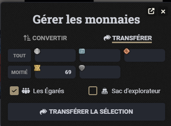
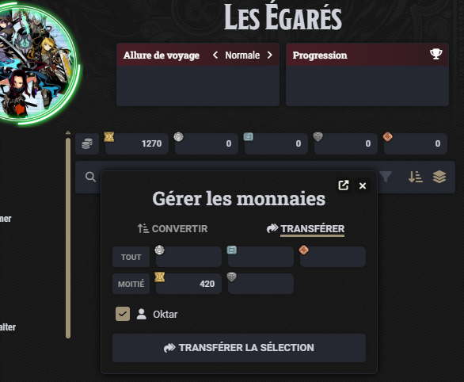
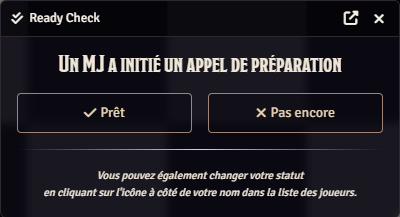
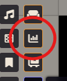
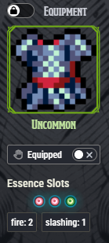

Patch 3.6 – Session 26
Patch 3.6 – Session 26
 Système
Système
 Le système de jeu, D&D5e, a été mis à jour (5.2.4 → 5.2.5).
Le système de jeu, D&D5e, a été mis à jour (5.2.4 → 5.2.5).- La compétence Armurerie a été renommée en Tannerie.
- Les armures intermédiaires et légères utilisent désormais la Tannerie pour être fabriquées.
- Les armures lourdes utilisent désormais la Forge pour être fabriquées.
- La fiche de groupe est désormais accessible aux joueurs.Elle est disponible depuis l'onglet Acteurs du menu latéral, dans le dossier PC.La fiche de groupe offre un aperçu rapide des ressources de groupe (points de vie, dés de vie, statistiques importantes) ainsi que des inventaires de chaque joueurs.
- L'argent du groupe est désormais partagé.L'argent du groupe est stocké sur la fiche du groupe, accessible depuis l'onglet Acteurs du menu latéral, dans le dossier PC.Les joueurs peuvent puiser dans l'argent du groupe à volonté, en utilisant le bouton Gérer les monnaies.
 (Cliquez sur l'image pour l'agrandir)De même, les joueurs peuvent envoyer de l'argent au groupe à volonté, en utilisant le même bouton sur leur fiche personnelle. (Cliquez sur l'image pour l'agrandir)Exemple d'un joueur envoyant des Entals au groupe : (Cliquez sur l'image pour l'agrandir)Exemple d'un joueur envoyant des Entals du groupe vers lui-même : (Cliquez sur l'image pour l'agrandir)Les coffres à trésors seront progressivement modifiés afin de distribuer les Entals au groupe directement.
(Cliquez sur l'image pour l'agrandir)De même, les joueurs peuvent envoyer de l'argent au groupe à volonté, en utilisant le même bouton sur leur fiche personnelle. (Cliquez sur l'image pour l'agrandir)Exemple d'un joueur envoyant des Entals au groupe : (Cliquez sur l'image pour l'agrandir)Exemple d'un joueur envoyant des Entals du groupe vers lui-même : (Cliquez sur l'image pour l'agrandir)Les coffres à trésors seront progressivement modifiés afin de distribuer les Entals au groupe directement. - Le système utilisé pour vérifier que les joueurs sont prêts a été modifié. (Cliquez sur l'image pour l'agrandir)
- Les boutons du menu latéral qui sont inutiles aux joueurs sont désormais masqués.
- Un cadran est désormais affiché sous l'interface de calendrier.
- Le système comptabilisant les jets de dés a été modifié. Il est accessible depuis les outils de contrôle, dans les contrôles de Token. (Cliquez sur l'image pour l'agrandir)Les statistiques comptabilisées jusqu'à présent ont été remises à zéro. Ceci dit, l'ancien module ne semblait pas les comptabiliser correctement.
Questionnaire #2
- Merci encore pour votre participation au questionnaire. Nous avons bien pris en compte vos retours, en particulier ceux concernant le système d’essences. Pour l’instant, nous allons appliquer les modifications suivantes aux essences d’armure pour la session 27, et nous continuerons les discussions autour de ce système afin de rendre également les essences d’arme plus intéressantes.
- Les essences d’armure ne diminueront plus la résistance aux dégâts.
- Elles continueront d’augmenter la résistance aux dégâts d’éléments spécifiques.
- Chaque essence équipée d’un même élément sera prise en compte : des bonus et/ou aptitudes spécifiques à cet élément seront octroyés, leur puissance et leur efficacité dépendant du nombre d’essences de cet élément équipées. Ces effets, dans la mesure du possible, ne dépendront pas des ennemis affrontés, afin d’éviter le problème actuel qui nécessite de connaître les monstres à l’avance pour choisir les bonnes essences.Par exemple, équiper une essence alignée sur l’élément glace pourrait conférer une aptitude en lien avec cet élément. Cette aptitude serait renforcée en équipant d’autres essences de glace.
- Les aptitudes liées aux essences d’armure seront plutôt défensives, mais cette idée pourrait facilement être transposée aux essences d’arme avec des capacités offensives.
- Combiner deux essences ou plus de différents éléments pourrait éventuellement donner accès à des aptitudes spécifiques à ces combinaisons.
- Cependant, cela créerait un très grand nombre de combinaisons à prendre en compte ; nous réfléchissons donc à imposer certaines limites, comme par exemple l’impossibilité de combiner des essences d’éléments opposés.
- Hormis le point n°1, qui sera appliqué quoi qu’il arrive, ces changements sont encore au stade de prototype et restent donc sujets à modification. Tous les retours ou idées à ce sujet (ou sur d’autres points) sont, comme toujours, les bienvenus.
-  (Cliquez sur l'image pour l'agrandir)
Classes
 Impérial
Impérial
- L'animation de Poussée sanguine a été modifiée.
Problèmes résolus
- Le coffre placé dans le Bastion est à nouveau accessible pour les joueurs.
- Les joueurs peuvent désormais déplacer le compteur de session.
- La jauge d'Union respecte désormais la priorité d'affichage de la barre BG3, et ne s'affiche plus par dessus certaines fenêtres telles que les fiches de personnages.